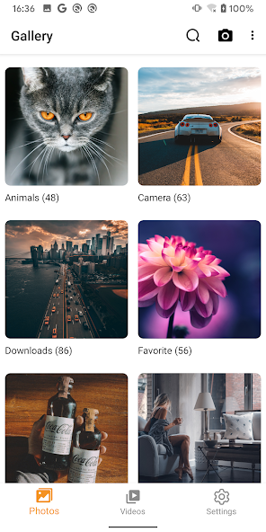
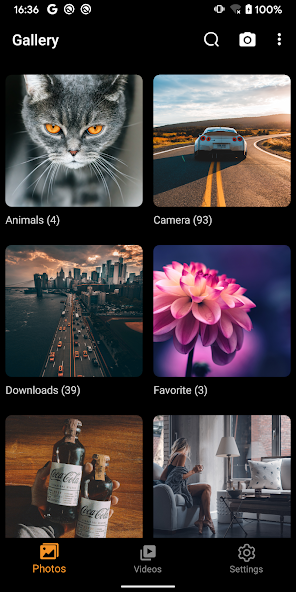

Gallery 图库到底值不值得掏钱——一笔掰碎了算的时间账
这款本地优先的安卓图库应用不做云、不注册、离线也能跑，没有明码标价的付费版，那它值不值得在手机里占一个位置？三类用户的算账结果摆在眼前。
我写这篇的时候正蹲在被窝里翻手机相册——凌晨两点，系统相册的白底界面亮得像一盏小台灯，刺得我眯起眼。这不是什么极端场景，是每个熬夜看照片的人都经历过的事。就是在这种时刻，我开始认真琢磨：Gallery 到底值不值得花钱？ 或者说，它值不值得我把系统相册换掉，专门腾出一个应用的位置和那点微乎其微的运行内存？
先从它是什么说起。Gallery 是一款安卓上的本地优先图库应用——照片不往云里走、不用注册账号、装上就能开、拔了 SIM 卡关了 Wi-Fi 也不耽误看图。定位很朴素：就是一个看图的，不做社区、不做滤镜链、不做智能相册自动归类。有人在它的官网里翻到过应用商店的介绍页，说它主打三件事：深色模式、流畅的浏览体验、以及把照片还给你自己的那个设计理念。

定价拆解：它甚至没给你花钱的机会
说"付费决策"有点抬举它了——截至我拿到的版本，Gallery 根本没有付费版。没有订阅入口、没有内购按钮、没有 Pro 升级弹窗。下载安装完打开就是全功能，深浅色切换、主题色、应用锁、视频自动播放开关，这些系统相册上要么没有要么藏得很深的设置，它全给你摊在明面上。
免费版给什么？翻了四篇gallery文档样本、对照了一圈同类应用之后，我把它的能力清单理了一遍：
- 浏览层：网格密度自由调、文件夹按真实路径分组、相册卡片布局、深色模式（AMOLED 屏上真省电）、跟随系统或手动指定
- 管理层：移动复制、重命名、搜索、按日期筛选——都是基础操作，但响应速度比部分国产 OEM 预装相册快，尤其是第一次扫描完上万张照片之后
- 隐私层：应用锁（指纹/生物识别）、所有照片存在手机本地、不申请云端权限、飞行模式下功能完整
- 没有的东西：云备份、跨设备同步、网页端、平板适配、智能人脸/地点归类、社区分享
这个"没有"清单其实是它的定价策略——不是你不想花钱，是它根本不给你花钱的通道。它把产品做在一个边界里，边界内全免费，边界外不做。
三类用户的算账结果
既然没有明确的价格标签，这笔账就得按时间成本来算——它替你省了多少时间，或者它在哪些地方让你多花了时间。
轻度用户：一年打开相册不超过二十次的人
如果你属于那种手机里存着几千张照片但从来懒得整理、只有偶尔想起才翻一下的人——Gallery 完全不用装。
理由很简单：系统相册在这档使用强度下够用了。你不会在意网格密度能不能调，不会在深夜翻图被白底晃眼（因为你根本不会在深夜翻图），也不会因为找不到某张照片而抓狂（反正你也不急）。装上 Gallery 之后，你大概率会忘记它的存在，又回到系统相册里去。换图库里头花的那五分钟下载安装权限授予，纯属沉没成本。
轻度用户的结论：不付，也不用装。
主力用户：每天都要翻相册、整理照片是日常习惯的人
这一档的人是 Gallery 的目标受众。如果你是个数码爱好者、拍照狂魔、或者做自媒体每天要从素材库里找图的人——Gallery 值得你把它设为默认相册。
算账：
| 维度 | 系统相册 | Gallery | 时间差 |
|---|---|---|---|
| 找一张特定照片（按日期翻） | 系统相册的筛选功能藏在二级菜单里，部分 OEM 甚至没有 | 主界面直接点日期分组 | 每次省 15-30 秒 |
| 深夜连续翻图 30 分钟 | 白底界面每隔几秒就晃一下眼，看完眼睛发涩 | 深色模式无缝切换，AMOLED 屏还省电 | 省了事后做眼保健操的时间 |
| 换手机后照片转移 | 系统相册依赖厂商云备份，没开云备份就得手动拷贝 | 照片本就是独立文件，连电脑整目录复制就行 | 省了设置云备份的时间 |
| 权限焦虑 | 系统相册和厂商账号深度绑定 | 不要求注册、不申请云端 | 省了读隐私条款的时间 |
主力用户每天在相册上花的时间算 10 分钟，Gallery 每天帮你省 2 分钟，一年就是 12 小时。这 12 小时够你看一部电影、读完一本书、或者多拍几十张照片。它没有付费版，但它替你省出来的时间就是它的"隐形定价"。
主力用户的结论：闭眼装。
重度用户：把相册当生产力工具的人
这里说的重度不是照片多，是对照片管理有刚性工作流需求的人——比如专业摄影师、后期修图师、或者需要从万级素材库中高频检索的内容创作者。
这一档用户需要 Gallery 但只需要它当辅助。理由是：Gallery 没有云同步、没有多设备协作、没有智能归类（人脸/地点/物品识别）。如果你的工作流需要在手机、平板、电脑之间无缝接力，Gallery 会让你在跨设备传输上多花不少时间——它把备份责任完全甩给了你自己。
算账：你在 Gallery 上获得的浏览流畅度和深色模式体验，抵不上你每周手动把新照片同步到 NAS 这个动作的繁琐程度。你需要一个能在所有设备上同步的主力方案（比如 NAS + Synology Photos，或者 iCloud Photos），然后把 Gallery 作为手机端的浏览界面——专门用来在深夜翻图、专门用来快速从本地文件夹里找素材。
重度用户的结论：值得装，但只当辅助，别指望它当主力。
替代方案盘点：不装 Gallery 的话你还有什么路
说了值得装的，再说说不值得的人怎么凑合。
同类免费图库：开源圈有几款知名的替代，比如 Simple Gallery（F-Droid 上能找到）、Aves（在 GitHub 上很活跃）。功能和 Gallery 差不多，都是本地优先、不做云、深色模式。选哪款其实是视觉偏好——Gallery 的界面更接近系统原生风格，Aves 的手势操作更丰富，Simple Gallery 的体积最轻量（不到 2MB）。你可以三个都装上试一下，留下最顺手的那个。
降低使用频率：如果你纠结的只是"深夜翻图晃眼"这一个痛点，其实还有更懒的解法——把系统显示设置里的"护眼模式"或者"深夜模式"提前打开。不是完美解法，但不费任何额外安装时间。
继续用系统相册：说真的，大部分人的需求系统相册都覆盖了。国产 OEM 预装相册近几年在智能归类、编辑功能、云备份上做得越来越完善。如果你已经在用厂商云备份并且觉得体验不错，那 Gallery 给你的那些优势（深色模式、不注册、不云）对你来说就是减分项——你可能反而需要云备份。

最后给个可执行的判断口诀
别再纠结了，对号入座就行：
- 你每天翻相册找图超过三次 → 装 Gallery，把它设为默认
- 你只在偶尔想起时才翻一下相册 → 不装，系统相册够用
- 你对隐私有特别高的要求、不想让任何应用拿到云备份 → 装 Gallery
- 你已经在用 iCloud 或厂商云相册并且体验不错 → 没必要换
- 你是摄影师/后期/自媒体素材管理员 → 装，但只当手机端浏览辅助
Gallery 没有付费版，所以这篇"付费决策账本"写到最后其实是个时间账本——它不花你的钱，但它花你每天的注意力。值不值，取决于你把每天那几分钟花在哪里更舒服。
如果你决定装上试试，安装包从下载渠道拿就行；装好之后第一次打开记得给存储权限，不然相册会是空的——这不是故障，是安卓的权限机制。首次授权的步骤跟着引导走不会有问题。
这套资料我在三个仓库里都放了一份，方便不同偏好的人按需取用。GitHub 的版本更新最快，Gitee 适合国内网络访问，GitCode 作为备份渠道。三个仓库的内容完全同步，选哪个都一样。